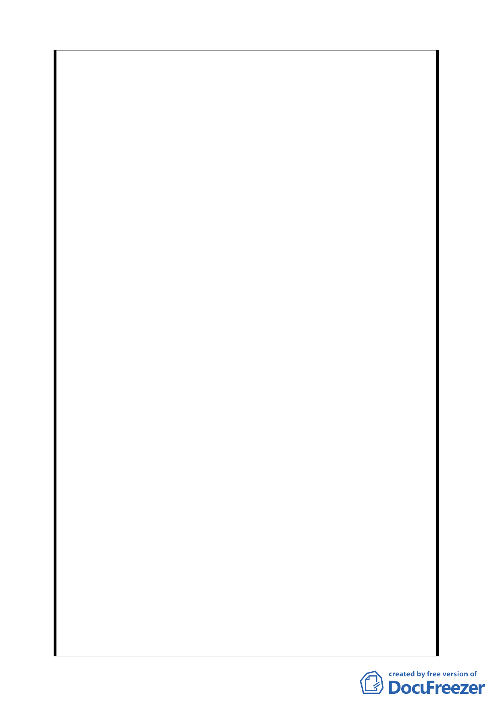

負擔之比例應設定下限，並不受「平均地權條例」中 45
％之上限約束。
四、 就「保變住六之六」地區之開發實務而論，都發局所提
之部分內容，應再重新檢討。（1）重劃負擔比例 15％，
有偏低時情形（2）開發門檻 5 公頃之真正意涵不明（如
同樣 5 公頃之土地，一者有 4 公頃的坡度平坦坵塊，另
一者有 4 公頃以上之陡坡，兩個屬性不同之 5 公頃土地
是否都可以申請開發？）（3）各「開發方式」之適用範
圍及要件（第 2 類「保變住」地區及「保變住 4」將可
能區分為若干小區塊開發，如無細部計畫作為依據，將
可能出現【1】各分區間之公用設備及地下管線是否可以
相互整合【2】該區之地區性公共設施（如：滯洪池、配
水池…）如何設置？如何負擔？興建期程？（比如，設
置汙水管線卻無污水處理廠，所集中的汙水未經處理廠
處理，仍將出現污染問題）等。
五、「保變住 25」多次送審環評未過，依法不得再提開發申
請，應將其回復為保護區。
六、依民國 82 年內政部都委會第 359 及第 362 次決議內容,
均已明確要求應對開發時程給予明確之限制,如未能依
限完成開發,應依法定程序檢討變更回復為保護區,第
375 次會議紀錄決議內容,載明應於三年內,以個案方式
擬定細部計畫,姑不論此三年是否即是所謂的時程限制,
然若就內政部都委會之歷次會議結論,設定開發時程之
限制是極為明確之要求,況且,台北市保護區變更住宅區
開發要點修正至今,已逾 10 年,又有多少保變住地區能
依照第 375 次會議結論之要求,完成細部計畫之擬定?內
政部都委會所作之決議,北市都發局是否有權拒絕執行?
今市府重新檢討保變住政策,訂定落日條款,不過是完成
當初應做而未做之事,所謂落日條款之訂定將造成地主
透過多方管道施壓,....,所有的開發案可因為不當施壓
而同意開發嗎?
七、保變住 25 開發一事,於環評法第 14 條中已明確載明,已
認定不應開發者,除非提出新的替代方案,方可再行審查,
該案已多次無法通過都委與環評聯席審查,今貴單位所稱
有部分平坦坵塊,此一條件並非今日出現,但本案仍多次遭
都委及環評委員認定不應開發,另所稱地主已組成重劃會
一五